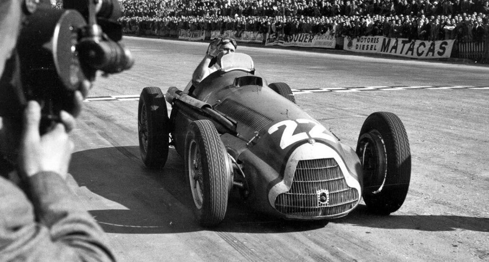

Les Légendes
Juan Manuel Fangio
Juan Manuel Fangio, né le 24 juin 1911 à Balcarce et mort le 17 juillet 1995 à Buenos Aires, est un pilote automobile argentin. Cinq fois champion du monde de Formule 1 (en 1951, 1954, 1955, 1956 et 19571), il a dominé la discipline reine du sport automobile dans les années 1950, étant jusqu'à ce jour le seul pilote à être sacré champion du monde dans 4 écuries différentes
Niki Lauda

Andreas Nikolaus Lauda dit Niki Lauda, né le 22 février 1949 à Vienne en Autriche et mort le 20 mai 2019 à Zurich1,2 en Suisse, est un pilote de course automobile, entrepreneur dans l'aviation commerciale et dirigeant sportif autrichien.
Il court notamment en Formule 1 de 1971 à 1979, puis de 1982 à 1985, obtient 25 victoires3 et remporte à trois reprises le titre de champion du monde des pilotes de Formule 1 (1975, 1977 chez Ferrari et 1984 chez McLaren).
Michael Schumacher
Michael Schumacher (prononcé en allemand : [ˈmɪçaʔeːl ˈʃuːmaxɐ] Écouter), surnommé « Schumi », né le 3 janvier 1969 à Hürth-Hermülheim (RFA, aujourd'hui l'Allemagne), est un pilote automobile allemand. Avec sept titres de champion du monde de Formule 1, 91 victoires en Grand Prix de Formule 1 et 68 pole positions, il possède l’un des plus beaux palmarès de ce sport. Michael Schumacher a détenu la plupart des records de la Formule 1. Il est l'un des plus grands champions du sport automobile.
Fernando Alonso

Sebastian Vettel

Lewis Hamilton

Max Verstappen

Les pilotes plus connus sur le grill de 2024
Charles Leclerc
Lando Norris

Carlos Sainz